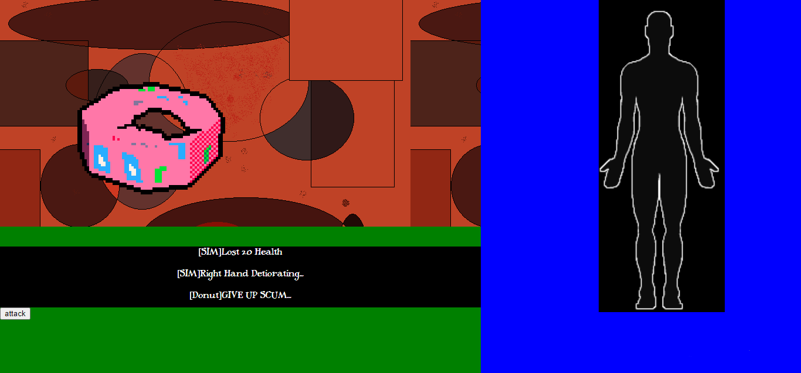
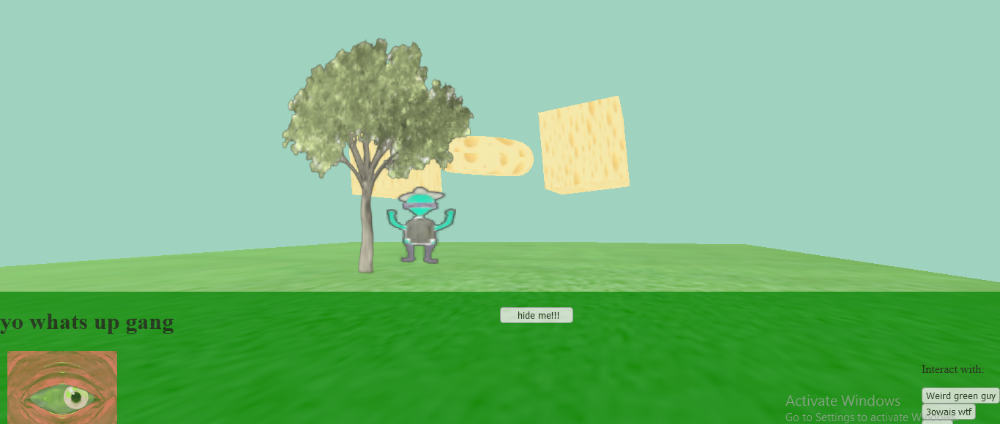
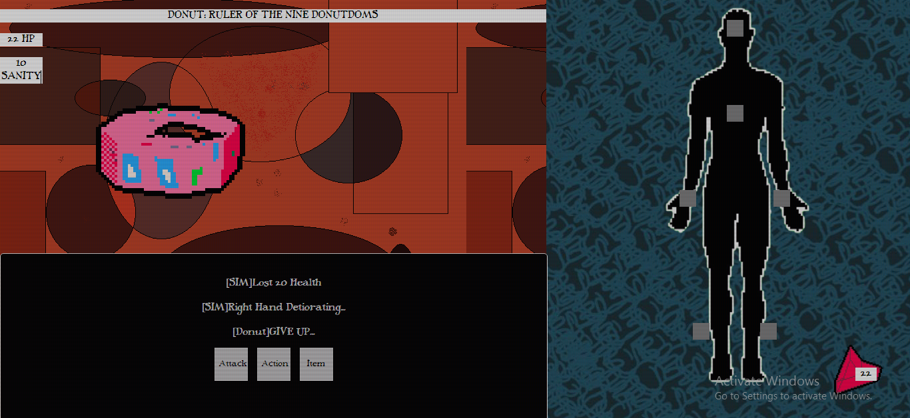

Four months ago I was exploring the depths of the internet checking out some new games that were sort of futuristic low and behold (I think thats the saying), I found Cruelty squad, this absolutely disgusting and vile game and I honestly LOVEDD it so I decided to take inspiration and kind of create my own short little thing.
So first of all I had to think of an idea or a main gameplay point that could interest the player as well as being original and imma be real with you that took me quite a while, after much thought and just staring at other games It kind of gave me a cool idea for what to cook up that I can’t wait to share with you to be real
Main Ambitionz (I am so quirky for putting a Z instead)
I want to be straight forward when I say this is mostly just a little test thing I am making, its not meant to be a large game or whatever just a short experience to see what I can cook up with the skills and experience I have. Its not much but it would be nice what I can do. I think in terms of what I can benefit from this project I will say maybe its to get sort of a following at least?
First steps
I decided to completely start with what I think people will be spending most of their times on and that’s the combat system. I decided it would be for the best to split into 3 parts for a good and chill layout. Top left will be just an area to inspect your enemy and see their stats and the bottom left is an area for you to carry out your actions while the complete right area is for you to manage your body and stuff, I mostly got that layout idea from a game called world of horror which is a really dope game.
First of all let me talk about what makes this combat system pretty cool I think so. So first of all, all battles from my current vision will be sort of different with their own approach.I think this will give the game more fun and refreshing experiences as well as making the short game experience pretty memorable, though I think the layout and main core gameplay will sort of remain the same, for the most part you should expect a turn based combat system. Right now I have not decided what you can do for all the actions but the stuff I have decided on is the typical attack and use item stuff. Ok so now with combat and health here is where the cool stuff comes in. This game has a SCI-FI theme and with inspiration (ripping off) from cruelty squad you can get items and stuff to attach to your body but the different way it works here is the items you use can make a for a cool set up and combos you can do however using them reduces the health of the limb basically making it rot, this should allow for more strategic plays where you plan for your next moves as well as taking risks, once a lib rots you lose HP and you can no longer use that specific limb. You also have a basic HP system with a system that’s mostly a work in progress and it’s a sanity system, I can’t say much about it since I haven’t really planned much but I think it will work somewhat like that sanity system in Don’t starve (another game I am taking “inspiration” from).
Ok back to the layout, here is a quick pic of what it looked like at the very beginning.

After a while of messing around with stuff, I decided to add this CRT screen flickering to the combat where as your HP decreases even more the flickering increases even more (will add an option to disable that for people sensitive to that) What’s the flickering for? Is this some sort of simulation? I am so happy to present this but YESSSSSSSSS it’s a simulation to the real world of the game, YESSSSSSS I COOKED UP A WHOLE 3D ENVIRONMENT THAT YOU CAN MOVE AROUND IN GRAHHAHAH. I know you might be reading thinking what is this idiot all excited about but I cooked this up in Javascript with like 0 prior knowledge and honestly it was quite painful.
I had to learn how three.js works which wasn’t really that terrible, what was actually painful was applying textures, dawggggg you had no idea how excruciating that was. I encountered lots of errors and stuff and security issues and the internet for a first time was not actually helping at all it was just straight messing and bumping around until I got it working. Right now there is 0 physics however I think I can apply some physics to the game world but that uses another obscure library and I am pretty sure if I get stuck on something on that I will be stuck forever, it is just a can of worms I don’t want to stick my genitalia in. The movement is really weird and funky but I do like it, and most of like in game characters and stuff you will be interacting with will be I think just jpegs. I think by the future of development of this project I will manage to break my expectations again and actually make some use of 3D models? And so far I managed to implement a sort of GUI, it’s nothing special just an overlaying green bar that you can hide if you want, I am pretty sure I will give it a sort of revamp in the future.

Story
Onto the final part of this draft I am probably never going to release, but I think there is a story I guess? I do have a message to send in the game and there is a start and ending and I do think I have a nice cast of characters cooked up who should breathe life into the game, so far I have cooked an intro for the game its mostly nothing too special just kinda chill

What a battle looks like right now (the 3D models spin around btw, and no they are not javascript, I cooked them up in PICOCAD, pretty cool app check it out)
WE WILL FLOAT OVER THE WATER, MY LIFE EXCITING AS DENNIS RODMANS WOAH WAOHA